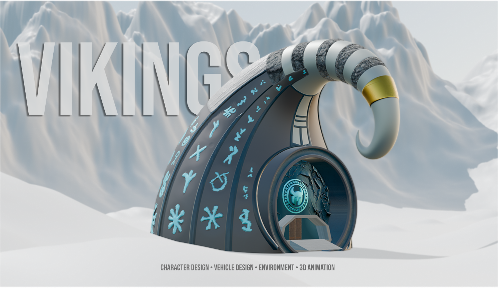
Projeto desenvolvido para a unidade curricular de Desenho Digital 3D. O objetivo consistiu na criação de um universo visual inspirado numa civilização futurista, misturando personagens, veículos e bases, desenvolvidos em 3D e posteriormente trabalhados em imagem e vídeo.
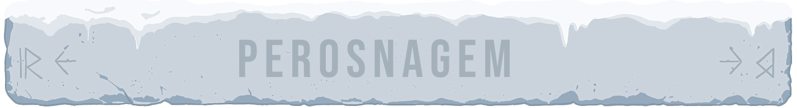
STALVARG
Stalvarg é uma personagem criada para representar um guerreiro ligado ao universo dos Neo Vikings. O seu design mistura referências nórdicas com elementos futuristas, criando uma figura robusta, fria e preparada para sobreviver num ambiente extremo. A personagem foi pensada para transmitir força, resistência e ligação ao gelo.
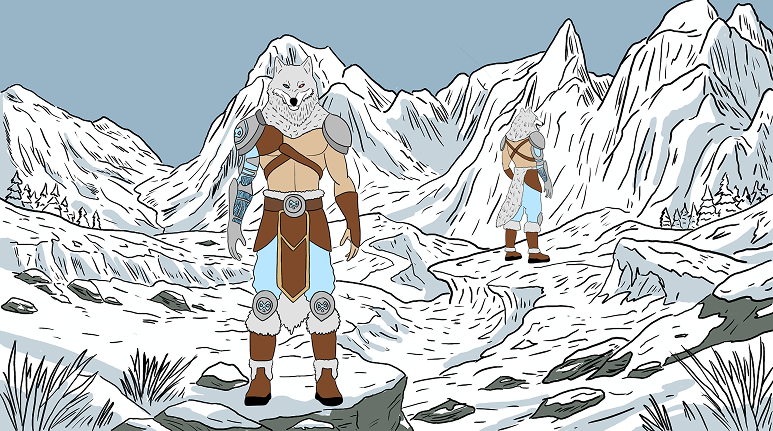
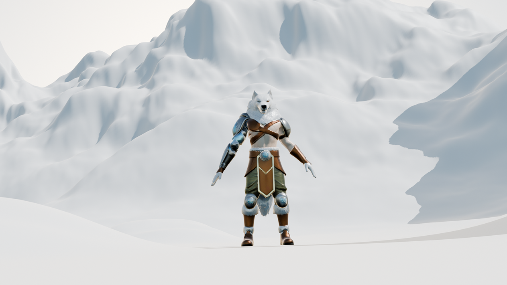
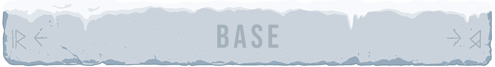
A base de Stalvarg é uma estrutura situada num grande monte gelado, antiga símbolo de poder e sobrevivência. O edifício foi pensado como uma construção que mistura materiais naturais, formas inspiradas na cultura Viking e detalhes tecnológicos. A entrada funciona como ponto central da composição, dando à base uma presença forte no meio da paisagem congelada.
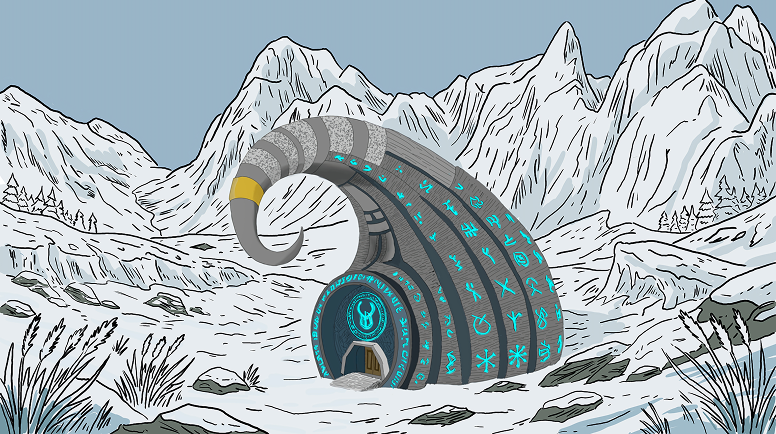
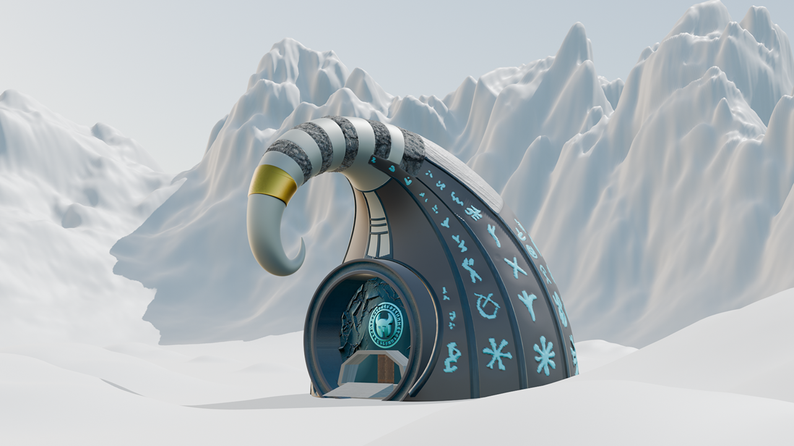
O veículo de Stalvarg é uma extensão da sua própria expedição. Inspirado numa carruagem robusta e adaptada ao gelo, foi criado para atravessar terrenos difíceis e resistir ao clima extremo. A sua forma combina madeira, metal e elementos defensivos, reforçando a estética fria e pesada do universo Neo Vikings.
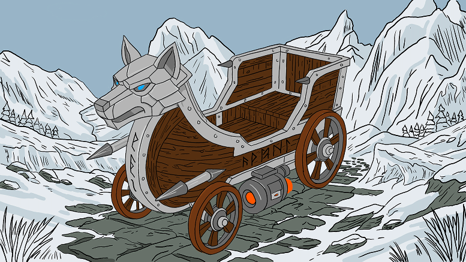
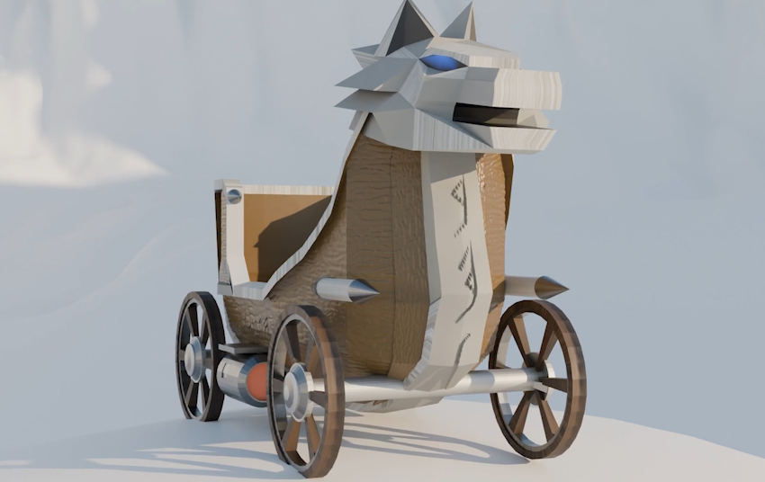
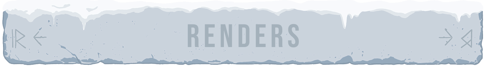
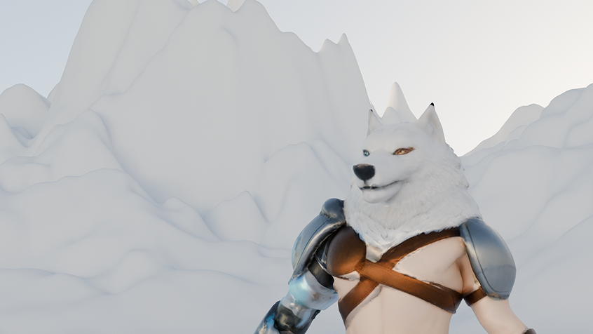
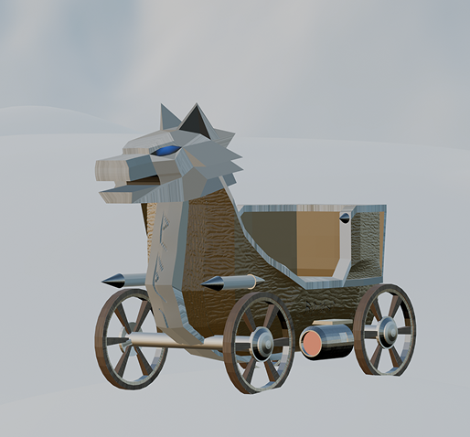
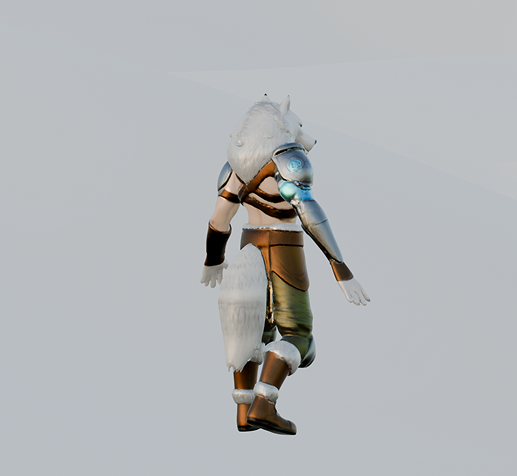
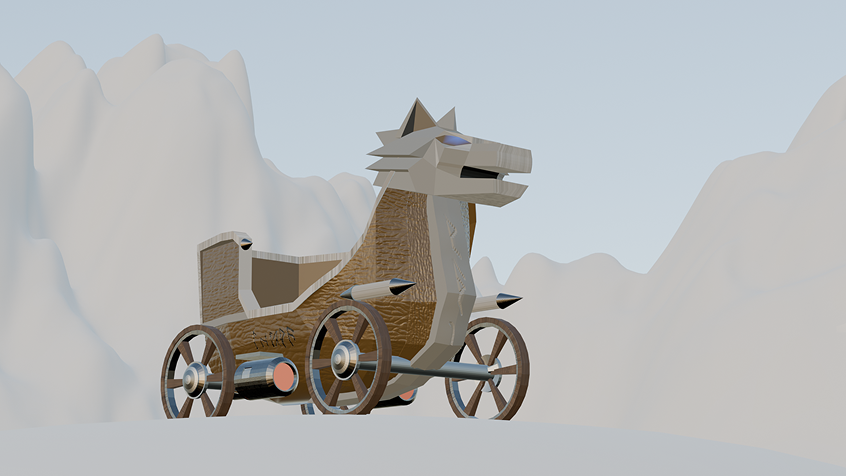
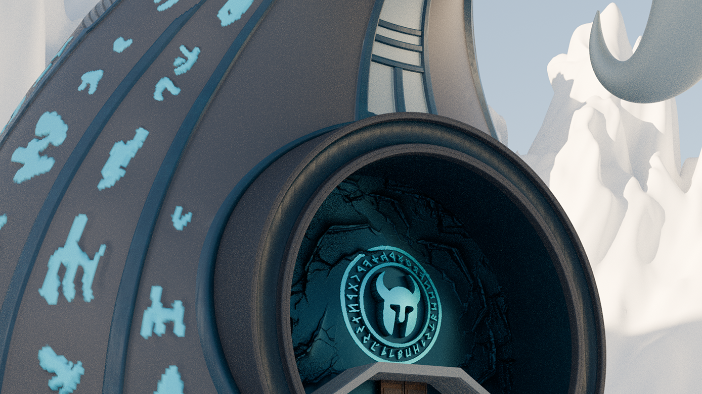